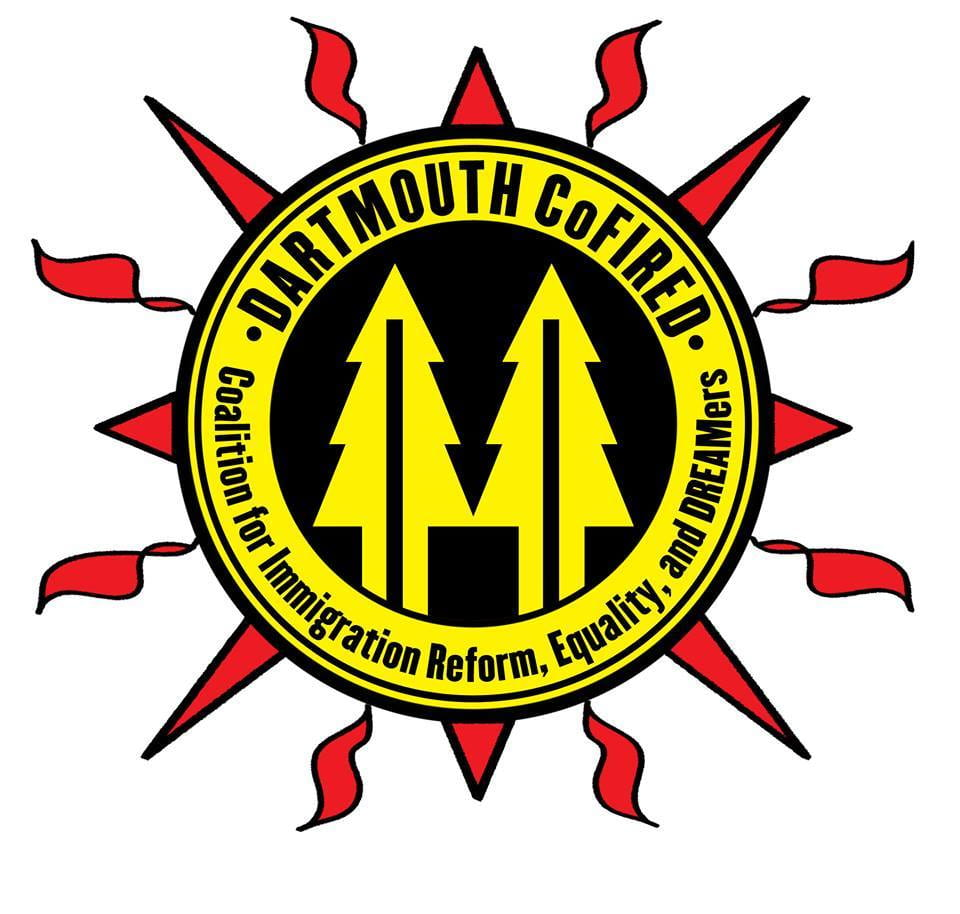
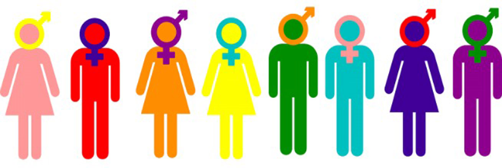

Computer Science: Right now, I am fluent in Python and am proficient in Java (currently taking CS10). With computers, I will have the opportunity to solve social issues that I am passionate and care about. DALI would provide me an incredible experience and learning opportunity to expand my knowledge and work on projects that have a positive impact.

Immigration justice: One issue I am very passionate about is immigration justice. In high school, I taught free civics courses to immigrants seeking citizenship. Here at Dartmouth, I am the Co-Alliance Director for the Coalition for Immigration Reform, Equality, and DREAMers (CoFIRED). I hope to integrate this passion into my work with computers.

Women's, Gender, and Sexuality, Studies: I hope to minor in WGSS. I think minoring in this subject and understanding oppressive stystems will help me greatly in achieving my goal of bettering humanity through computers.